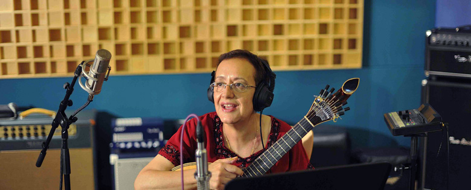

19 julho | Lusa | entrevista a Luisa por Nuno Lopes saiu a 24 julho | observador.pt | impala.pt | 24.sapo.pt
05 setembro | 21h30 – RTP2 "Jornal 2" | entrevista em directo com João Fernando Ramos
14 setembro | sexta-feira | 16h00 – TSF “Zona Global” | entrevista com Mário Dias
17 setembro | segunda-feira | 11h00 – TSF "Começo de Conversa"| entrevista com Ana Sousa Dias
18 setembro | terça-feira | 15h00 – Antena 1 “Sons da Lusofonia”| entrevista gravada com Edgar Canelas
museudooriente | portugalrebelde.blogspot | portaldofado.net | triplovblog.wordpress |